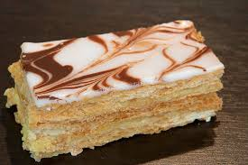

Ingredientes:
- 1 lámina de hojaldre
- 2 tazas de leche
- ½ taza de azúcar
- 2 cucharadas de maicena
- 3 yemas de huevo
- 1 cucharadita de esencia de vainilla
- Azúcar glass para decorar
Preparación:
- Precalienta el horno a 200°C y hornea la lámina de hojaldre hasta que esté dorada.
- Calienta la leche con la vainilla en una cacerola.
- Mezcla el azúcar, la maicena y las yemas en un bol hasta que se integren.
- Agrega la mezcla a la leche caliente, removiendo hasta espesar.
- Corta el hojaldre en capas y rellena con la crema pastelera.
- Espolvorea azúcar glass y disfruta tu milhojas de crema. 🎂